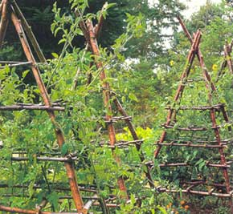
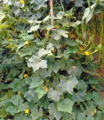
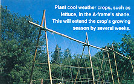
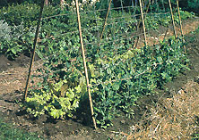
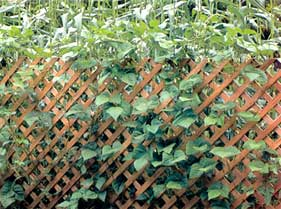

The way to better cukes, tomatoes and a host of other veggies - is up.
It wasn't just the cucumbers that had him surprised. A good percentage of my garden grows upward, instead of outward. Indeed, my vegetable patch is a virtual forest of stakes, wire towers, trellises and other supports. In fact, it's always a shock to me to see gardens that do not use vertical supports. Toward the end of this season, for instance, I visited a friend who was very proud of his garden, especially his tomato patch. "I've got five varieties growing," he exclaimed, "each a different color. What a beautiful display they make."
When I got there, however, I found his tomatoes running wild, with no supports. The ground was a jungle of vines, with a lot of half-rotted fruit lying on the damp ground. Nearby, where he'd grown his tomatoes a previous year, there was a mass of volunteer plants choking out his wife's flowers.
Of the many reasons to grow crops vertically, the biggest is space. By training vegetables upward, you can plant more in the same area. This method also frees up ground for other crops.
Keep in mind that most plant spacing recommendations are based on the use of mechanical cultivators, but in a vertical garden, you can grow veggies surprisingly close to one another.
Take those cukes Pat admired so much. I grew them on a plastic mesh trellis, 8' long and 6' high. Seeds were planted in rows four inches outwards on both sides of the fencing, and the plants were thinned to 4" apart - that's right, only 4". The end result is a wall of cucumber vines whose flowers are fully exposed to bees and other pollinators, which results in a higher crop yield.
When you grow vertically, each plant gets more sunlight than if it were sprawling on the ground, which in turn produces stronger plants with exuberant foliage growth. These leaves provide enough shade to prevent sunscald, even though the fruits appear to be more exposed. In fact, the leaves provide so much coverage that I'll often find veggies my wife and I missed while harvesting.
What's more, by growing vertically you avoid the unsightly mess vining plants form when allowed to run helter-skelter along the ground. If you use standard 30" or 36" beds, sprawl can extend across beds, limiting what you can plant. Tomato vines, for instance easily pull downward and smother neighboring crops.
Pest control is simpler as well. Because each plant and leaf is fully exposed, you can easily see any problem developing and take the steps to correct it. Once you discover the ease of picking squash bugs off a climbing vine, you'll never again want to face the chore of chasing them through a ground-level jungle.
Greater visibility and accessibility make a vertical harvest much easier as well. Also, with none of the vegetables lying on the damp ground, you reduce the chances of losing your crop to rot.
Virtually any vining plant can be grown vertically. Some will need help in the form of ties or mesh supports, and you will often have to take time to train the vine onto the support. This can be a problem with cucumbers and legumes, which want to sprawl on the ground.
With large-fruited vines, such as melons and squashes, you'll have to support the individual fruits to keep their weight from pulling the whole plant down. The easiest way to do this is with recycled pantyhose. Just encase the young fruit inside the toe of the pantyhose leg then tie the hose to the support structure. The stocking is soft and stretchy, so there's plenty of room as the fruit grows and expands. Or, you can merely create a sling that supports the melon or squash.
A lady friend has suggested that old brassieres work for this purpose. This might be whimsical, but I'm not sure it's practical.
Support structures range from simple stakes to elaborate trellises, tipis and A-frame structures. Here's a rundown of options.
Mother Nature Tall, thick-stemmed plants can be used as supports for other crops. The most typical example of this are pole beans growing up corn stalks - an idea that predates European contact with the New World. Other plants, work nicely for this purpose; sunflowers, for instance, also make ideal stakes for beans.
In colonial days, gardeners used pea sticks, made by recycling brush and branch trimmings. A strong central staff with holes bored through
Growing upward instead of outward results in greater space economy, easier harvests, and a feast that's easy on the eyes.
it every inch or two was pushed into the ground, and thin branches pushed through the holes. Peas were then trained to grow on this ladder.
Stakes Everything from cut lumber to bamboo has been used as a support stake for vegetable plants. When choosing a stake, make sure it will be strong enough and tall enough to support the plant. Many bean poles, for instance, have vines extending 8' to 12'. Don't forget, too, that tendril-less plants, like tomatoes, will need to be tied to stakes.
My favorite stake material is standard one-inch lumber. I rip boards into strips the same width as the board's thickness. This gives me stakes that are 3/4"square, a good size for most plants. Plus, these stakes are just the right size for building other support structures.
Tipis and A-frames These are a good way to maximize limited space, especially for peas and beans. What's more, the ground inside the tipi, being shaded by the vines, stays cooler and moister. You can extend cool weather crops, such as lettuce, several weeks by growing them inside the tipi. These can be made from the same 3/4" stakes described above. Simply lean five or six of them against each other and tie them together at the point where they cross.
A-frames can be a bit more elaborate than tipis. To make them, create off-centered X's at one end by bolting two stakes together. You can join as many of these together as you want by attaching them across the top with a cross stake. I find that four X's extending 36" gives me a nicely sized A-frame that just fits over a standard bed. Anything longer than that makes it difficult to tend the secondary crop inside.
Towers A tower will provide ample support for a single plant, such as a tomato vine. Commercial wire cones, for instance, are actually towers, but most of them are too skimpy. It's better to make your own; you can use woven wire fenc ing to create a cylinder 18" to 24" in diameter. Be sure to use wire with openings large enough to let you reach in and harvest the fruit. The smallest practical size for these openings is 4" x 4", and 6" x 6" is really none too large.
Trellises A trellis is nothing more than a short fence with a frame around it. Materials range from netting and plastic mesh to lattice and woven wire. When choosing materials, consider whether it's strong enough to support the crop. Will it be easy to clean up at the end of the season? Is it nontoxic? Is it portable?
I've concluded that woven wire is the best all-around material. It requires no top frame, can support just about any plant, allows for easy removal of dead vines at season's end, and is easy to relocate.
If you are growing a major crop then woven wire can also be used to create a full fence, built to any length. Add an interesting twist to your garden by building walk-in spirals and mazes with woven wire. Imagine, for instance, beans growing on a spiral fence with a quiet, secluded garden bench at its center.
Arbors Typically thought of as supports for flowers and vining fruits, there's no reason arbors can't be used for vegetables as well - they are the ultimate in trellises.
High on my wish list is a trellis with a computer station
inside. I could write while out in the garden, snacking on the beans available at arm's length. Just another benefit of vertical growing.
|
 Growing upward instead of outward results in greater space economy, easier harvests, and a feast that's easy on the eyes |
Trellises are nothing more than short fences. That said, you can't beat a trellis for picturesque impact. |
 |
|
 |
 |
 |